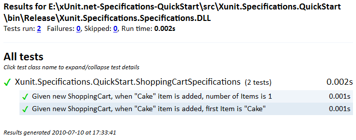

Quick Start
- Create a new test project in your solution.
Call it ProjectNameSpecifications (where ProjectName is the name of the project you want to test). - Download the latest release of xUnit.net and add a reference to xunit.dll in you test project.
- Download the latest release of xUnit.net Specifications and add a reference to Xunit.Specifications.dll in you test project.
- Create a new class file in your test project. Call it ShoppingCartSpecifications.
-
Paste the following code into ShoppingCartSpecifications class:
[Specification] public void AddItemSpecifications() { ShoppingCart cart = null; "Given new ShoppingCart".Context(() => cart = new ShoppingCart()); "when \"Cake\" item is added".Do(() => cart.AddItem("Cake")); "number of Items is 1".Assert(() => cart.Items.Count.ShouldEqual(1)); "first Item is \"Cake\"".Assert(() => cart.Items.First().ShouldEqual("Cake")); } // this class is just used as an example public class ShoppingCart { public ShoppingCart() { Items = new List<string>(); } public List<string> Items { get; private set; } public void AddItem(string product) { Items.Add(product); } } - Congratulations! You have created your first specification. Not try creating specifications for your code...
- When you run xUnit.net console runner with html report output enabled you should see a test report such as this: 
Syntax
TODO
Notes
- Consider calling your test assembly ProjectName.Specifications (e.g. tests for project "Coderoom" would reside in project called "Coderoom.Specifications")
- Consider using one file for each type you are testing and calling it TypeNameSpecifications (e.g. specifications for class "Order" would reside in class "OrderSpecifications")